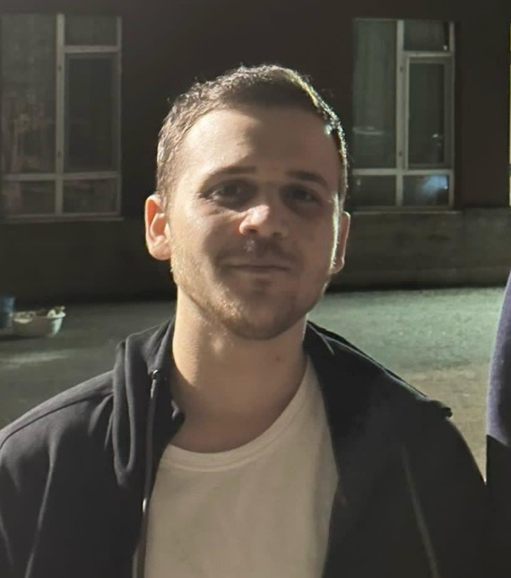

About

Bio
- My name is Emirhan Bıçkıcı, born in 2002.
- I am originally from Balıkesir, but I have lived in Ankara all my life.
- I studied at Sofuoğlu Primary School.
- I attended Tevfik İleri Anatolian Imam Hatip School for both middle and high school.
- I am currently a 4th-year student at Hacettepe University, Department of Geomatics Engineering.
Hobbies
- I enjoy playing computer games.
- I like watching TV series and movies, especially sitcoms.
- I do sports from time to time.
- I enjoy cooking and i like exploring foreign cuisines.